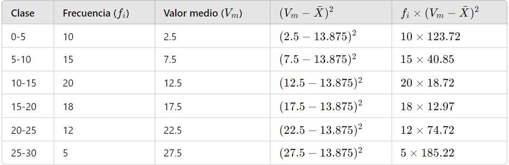
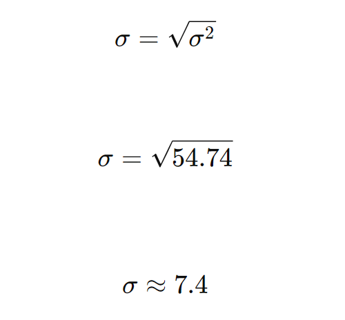

Desviación estandar
Continuando con el ejemplo pasado obtendremos la desviación estandar
Una vez calculadas las desviaciones cuadráticas
Sumar

=10×123.72+15×40.85+20×18.72+18×12.97+12×74
=1237.2+612.75+374.4+233.46+896.64+926.1=4379.55
Calcular la varianza
calculamos la varianza utilizando la fórmula
Calcular la desviación estandar
La desviación estándar (𝜎) se calcula tomando la raíz cuadrada de la varianza
Por lo tanto, la desviación estándar de estos datos agrupados es aproximadamente 7.4 grados Celsius.
